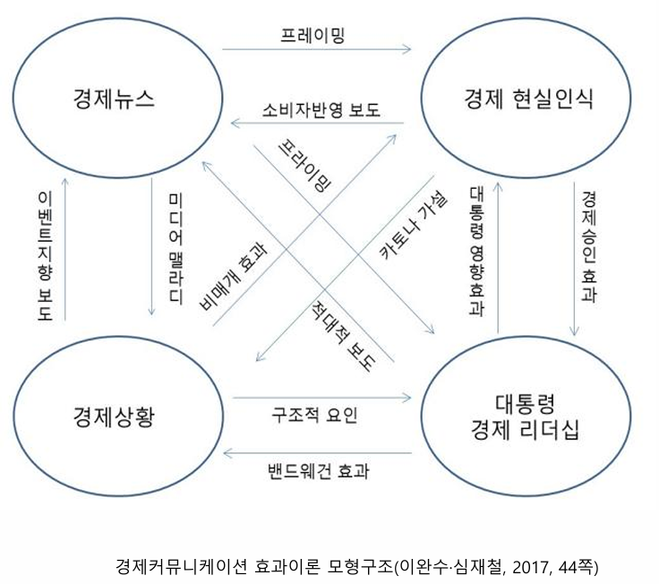

경제뉴스는 현실을
반영하는가, 구성하는가
00이 주차의 위상
이 강의가 경제학과 수업이 아니라 미디어학과 수업인 이유가 이 주차에 다 들어 있음. 나머지 14주는 지표를 배우지만, 왜 그 지표를 의심해야 하는지는 이 주차에서만 배움.
경제를 만든다."
왜 이 문장이 특별한가
- 날씨 뉴스는 날씨를 바꾸지 못함. 태풍 보도가 태풍의 경로를 바꾸지 않음.
- 스포츠 뉴스도 마찬가지. 경기 결과는 이미 확정된 사실임.
- 그러나 경제 뉴스는 경제를 바꿈. 보도가 심리를 움직이고, 심리가 소비·투자·예금 인출이라는 실제 행동으로 이어짐.
- 극단적 예 — "은행이 위험하다"는 보도가 실제 예금 인출(뱅크런)을 부름. 보도 자체가 부실을 현실로 만듦.
- 따라서 경제 기사에는 다른 분야보다 무거운 책임이 따름.
- 지정 리딩 — 이완수(2012) 『경제와 커뮤니케이션』(시간의물레) 1~3장. 이 주차의 주 출처임.
- 실무 참고 — 박지수(2019) 『어려웠던 경제기사가 술술 읽힙니다』(메이트북스)
- 데이터 — 경제 데이터 분석실 · 지표 발표 일정 · 경제지표 사전(1,000개)
이해 → 분석 → 비판 → 재구성의 네 단계임. 1~7주차가 '이해', 9~15주차가 '분석·비판', 경제뉴스 비평이 '재구성'에 해당함. 오늘은 그 전체 지도를 펼치는 시간임.
01오늘 만날 열 가지 개념
낯선 용어부터 먼저 정리함. 외우지 말고, 각 개념마다 사례 하나씩 붙여 이해할 것.
- 거울 모델 · 현실반영론mirror model / news reporting
- 뉴스는 현실을 비추는 거울이라는 입장. 경제뉴스는 통계와 지표에 근거하므로 비교적 객관적이라고 봄.
- 현실구성론news making
- 현실을 전부 보도하는 것은 불가능함. 고르고 해석하는 순간 재구성됨. 쉽게 — 같은 경기를 봐도 중계진마다 하이라이트가 다름.
- 의제설정agenda-setting
- 언론이 무엇을 자주·크게 다루느냐가, 대중이 무엇을 중요하다고 여기는지를 정함. 쉽게 — "무엇을 생각할지"가 아니라 "무엇에 대해 생각할지"를 정함.
- 프레이밍framing
- 같은 사실을 어떤 틀에 넣어 말하느냐의 문제. 쉽게 — "실업률 안정" vs "청년 체감실업률 심각" — 같은 날, 같은 통계.
- 비대칭 보도asymmetric coverage
- 좋은 소식보다 나쁜 소식이 훨씬 많이 보도되는 경향. 언론계 격언 "bad news is good news".
- 이벤트지향 보도 · 의제추종event-driven / agenda-following
- 발표가 있어야만 기사가 나오고, 보도자료 첫 문장을 그대로 받아쓰는 관행.
- 미디어 맬라디media malady
- 언론이 나쁘게 보도하면 실제 경제가 나빠짐. 쉽게 — "불황"이라는 말이 반복되면 사람들이 지갑을 닫음.
- 카토나 가설Katonian hypothesis
- 사람들의 경제심리가 실제 경제상황을 움직인다는 주장. 심리경제학자 조지 카토나(1964).
- 랠리 효과rally effect
- 전쟁·국가적 위기에는 오히려 대통령에게 우호적으로 보도되는 현상.
- 해석 공동체interpretive community
- 기자와 전문가 집단이 서로 참조하며 같은 해석 틀을 공유하게 되는 것. 쉽게 — 다른 신문인데 왜 인용되는 전문가 이름이 겹치는가.
- ① 무엇이 기사가 되는가(선택) — 의제설정, 해석 공동체, 이벤트지향 보도
- ② 어떻게 말해지는가(해석) — 프레이밍, 비대칭 보도, 정파성
- ③ 그 결과 무엇이 벌어지는가(효과) — 미디어 맬라디, 카토나 가설, 랠리 효과
개념 총괄표 — 사례와 확인법까지 한 장에
| 개념 | 묶음 | 대표 사례 | 기사에서 확인하는 법 | 다시 다루는 주차 |
|---|---|---|---|---|
| 현실반영론 | 선택 | 국가데이터처 수치를 그대로 옮긴 리드 문장 | 수치에 출처·기준시점·단위가 붙어 있는가 | 2주차 통계와 지표 |
| 현실구성론 | 선택 | "시민들의 시름이 깊다" | 주어가 불특정 집단인가. 근거 수치가 있는가 | 전 주차 공통 |
| 의제설정 | 선택 | 주가 기사가 실질임금 기사보다 압도적으로 많음 | 같은 기간 보도 건수를 세어 비교함 | 5·11주차 |
| 해석 공동체 | 선택 | 다른 신문인데 인용 전문가가 겹침 | 3~5개 매체의 인용 취재원 명단을 대조함 | 13주차 기업보도 |
| 이벤트지향 보도 | 선택 | 보도자료 첫 문장이 5개 매체에 그대로 등장 | 보도자료 리드와 기사 리드를 나란히 붙임 | 3·6·9주차 |
| 프레이밍 | 해석 | "실업률 안정" vs "청년 체감실업률 심각" | 형용사·부사에 동그라미. 비교 기준을 확인함 | 5·14주차 |
| 비대칭 보도 | 해석 | 방송 3사 경제뉴스 긍정 3% · 부정 37% | 같은 지표의 상승 기사와 하락 기사 수를 셈 | 5·7주차 |
| 정파성 편향 | 해석 | 부동산 위기 보도량이 정권 따라 2배 차이 | 기사 하나가 아니라 기간 전체 분포를 봄 | 11·14주차 |
| 미디어 맬라디 | 효과 | '불황' 논조가 소비를 위축시킴 | 보도 논조와 소비자심리지수(CCSI)를 겹쳐 봄 | 4주차 경제심리 |
| 카토나 가설 | 효과 | 2~4개월 전 경제심리로 실적 예측 가능 | 심리지표가 실물지표보다 앞서는지 시차 확인 | 4주차 경제심리 |
| 랠리 효과 | 효과 | 1997년 외환위기 — 최악인데 보도는 긍정적 | 위기 시점 전후 논조 변화를 추적함 | 7주차 경제위기 |
| 비매개 경험 효과 | 효과 | 장바구니 물가는 뉴스 없이도 앎 | 그 지표가 내 경험으로 검증 가능한지 확인함 | 6주차 물가 |
02경제뉴스란 무엇인가
성격 — 무엇을 다루는가
- 경제주체인 정부 · 기업 · 소비자의 경제활동과 그로 인한 경제 현상을 다룸
- 범위가 매우 넓음
미시적 이슈
개별 주체 · 개별 시장- 물가와 생산
- 개별 기업 동향, 실적, 신제품
- 채용과 인사
- 부동산 실거래가
거시적 이슈
국가 · 국제 단위- 국내외 경기변동
- 경제 정책(재정·통화)
- 외환시세(환율), 경상수지
- 국내총생산(GDP)
역할 — 세 방향으로 작동함
- 대중의 경제 현실 인식에 영향 사람들이 "지금 경기가 어떤가"를 판단하는 근거의 상당 부분이 뉴스임.
- 실제 경제상황에 영향 물가·고용·투자·금융 같은 실물 변수 자체가 보도에 따라 움직임. 뉴스가 현실을 바꿈.
- 정치적·정책적 의사결정에 영향 대통령 지지도, 선거, 정책의 채택과 폐기에 개입함.
- 다른 분야 저널리즘에는 이 고리가 없음. 사건·사고 보도는 이미 벌어진 일을 전함.
- 경제 보도는 아직 벌어지지 않은 일을 앞당기거나 막을 수 있음.
- 이것이 경제기자에게 특별한 윤리적 부담을 지우는 이유임. → 뒤의 08. 효과이론에서 정면으로 다룸.
실무자가 먼저 알려주는 여덟 가지 (박지수, 2019)
- 언론사는 이윤을 추구하는, 광고에 민감한 기업임. 비영리 공익기관이 아님.
- 대중의 관심을 끌기 좋은 제목과 내용에 주의할 것. 제목은 기자가 아니라 편집자가 다는 경우가 많음.
- 보도된 내용은 이미 한발 늦음. 시장 참여자는 이미 알고 반응한 뒤임.
- 기사라고 100% 정확하지 않음. 마감 시간과 오탈자, 단위 오류가 실재함.
- 반복되는 시즌성 뉴스에 주의할 것 — 연초 전망, 명절 물가, 여름 휴가철, 연말 결산.
- 누군가의 이익을 위한 뉴스에 주의할 것 — 특정 종목·업종·정책의 홍보가 기사 형태로 옴.
- 경제의 답은 하나가 아님. 같은 지표를 두고 정반대 전망이 공존하는 것이 정상임.
- 그럼에도 경제뉴스 정보는 매우 유용함.
03두 개의 대립하는 관점
경제저널리즘 연구의 가장 오래된 논쟁임. 뉴스는 거울인가, 창작물인가.
현실반영론
거울 모델 · NEWS REPORTING- 경제뉴스는 통계자료와 지표에 기초하므로 경제현실을 비교적 객관적으로 반영함
- 경제뉴스는 경제상황과 상당히 일치함 (Nadeau et al., 1999)
- 전반적 경제현실과 추세를 잘 반영함 (Behr & Iyengar, 1985; Wu et al., 2002)
- 경기가 나쁠 때 부정적 뉴스가 늘고, 좋을 때 긍정적 뉴스가 늚 (Fogarty, 2005)
현실구성론
NEWS MAKING- 경제 현상을 있는 그대로 모두 보도하는 것은 불가능함
- 경제 정보와 이슈는 선택과 해석으로 재구성됨
- 확인할 것 ① — 뉴스가치 판단에 의한 선택인가, 언론사 이익에 부합하는 선택인가?
- 확인할 것 ② — 대중의 이해를 돕는 균형된 해석인가, 전문가를 동원한 편향된 해석인가?
한쪽을 고르는 것이 목적이 아님. 중요한 것은 어디까지가 반영이고 어디부터가 구성인지 매번 확인하는 습관임. 한 기사 안에서도 문장마다 다름.
| 문장 | 판정 | 근거 |
|---|---|---|
| "9월 소비자물가는 전년 동월 대비 2.1% 올랐다" | 반영 | 국가데이터처 공표치를 그대로 옮김. 검증 가능함. |
| "물가가 두 달째 2%대에 머물며 안정세를 보였다" | 경계 | '2%대 두 달'은 사실. 그러나 '안정세'는 해석임. 누가 안정이라 판정했는가. |
| "장바구니 물가는 여전히 높아 시민들의 시름이 깊다" | 구성 | 누구의 시름인가. 몇 명인가. 근거 없이 감정을 부여함. |
- 수치와 출처가 붙어 있으면 반영에 가까움.
- 형용사·부사가 붙는 순간 해석이 시작됨 — 안정, 여전히, 급등, 소폭, 우려, 불안.
- 주어가 불특정 집단이면 구성일 확률이 높음 — 시민들, 전문가들, 시장은, 업계는.
출처·기준시점·단위가 명시됨
비교 기준의 선택이 개입함
판정 주체가 숨겨짐
근거 없는 집단 심리 서술
04경제 현실의 선택 — 무엇이 기사가 되는가
- 경제 지표(성장·물가·금리·환율·고용)를 제대로 이해하려면 다변수 시계열 분석이 필요함. 복잡하고 어려운 과제임.
- 기자에게도 어려움. 그래서 언론과 전문가 집단이 상호작용하며 해석 공동체를 형성함 (Berkowitz & TerKeurst, 1999).
- 구성원들이 선택과 해석을 공유하면서 대중이 동의할 만한 의미체계를 구축함.
- 부작용 — 다른 신문인데 논리와 인용 전문가가 겹침. 다양성이 아니라 수렴이 일어남.
(1) 특정 지표가 더 크게, 더 자주 보도됨
- 갱신 주기 — 매일 바뀌는 지표가 매달 바뀌는 지표를 이김.
- 가시성 — 오르내림이 즉시 눈에 보이는가.
- 이해관계자 수 — 클릭이 나오는가.
순위별 이유를 뜯어보면 다음과 같음 (이완수, 2012).
| 순위 | 지표 | 왜 이 순위인가 |
|---|---|---|
| 1 | 주가 | 매일 숫자가 바뀜 → 기사거리가 매일 생김. 오르내림이 즉시 눈에 보임. 이해관계자가 많고 클릭이 잘 나옴. |
| 2 | 환율 | 역시 실시간으로 변동함. 수출입·해외여행·유학 등 체감 접점이 넓음. |
| 3 | 금리 | 대출·예금과 직결됨. 다만 기준금리 결정일 중심으로 몰림. |
| 4 | 실업률 | 월 1회 발표. 발표일에 집중되고 그 외에는 조용함. |
| 5 | 소비자물가 | 월 1회 발표. 체감과 통계의 괴리 때문에 논쟁이 붙을 때만 커짐. |
- 주가는 국민 다수의 삶을 가장 잘 보여주는 지표인가?
- 주식을 보유하지 않은 가구에게 코스피 지수의 상승은 무엇인가.
- 반대로 전월세 가격이나 실질임금은 훨씬 많은 사람의 삶을 좌우하지만 보도량은 적음.
- 정리 — 보도량 순위는 '중요도 순위'가 아니라 '기사 만들기 쉬운 순서'에 가까움.
(2) 상승과 하락에 따라 차별적으로 뉴스화됨
오를 때 많이 보도됨
상승 = 나쁜 소식인 지표- 소비자물가 — 오르면 생활고
- 실업률 — 오르면 고용 위기
내릴 때 많이 보도됨
하락 = 나쁜 소식인 지표- 주가 — 내리면 투자 손실
- 환율 — 급변하면 시장 불안
- 금리 — 방향 전환 자체가 사건
- 공통점 — 지표가 유지될 때보다 움직일 때 훨씬 많이 보도됨 (이완수, 2012).
- 더 정확히는, 나쁜 방향으로 움직일 때 많이 보도됨. 방향에 따라 뉴스가치가 비대칭임.
지표 × 방향 뉴스가치 매트릭스
| 지표 | 상승할 때 | 하락할 때 | 유지될 때 | 보도되지 않아 생기는 사각지대 |
|---|---|---|---|---|
| 소비자물가 | 크게 보도 생활고 프레임 | 작게 보도 | 거의 없음 | 물가가 내려도 이미 오른 수준은 그대로라는 사실 |
| 실업률 | 크게 보도 고용 위기 프레임 | 작게 보도 | 거의 없음 | 구직 단념자 증가로 인한 실업률 하락 착시 |
| 주가 | 보도 호황 프레임 | 크게 보도 손실 프레임 | 거의 없음 | 주식 미보유 가구에게 지수 변동이 갖는 의미 |
| 환율 | 급등 시 보도 | 급락 시 보도 | 거의 없음 | 완만한 추세적 절하가 누적시키는 수입물가 부담 |
| 금리 | 인상 결정일 보도 | 인하 결정일 보도 | 동결은 작게 | 동결의 이유와 그것이 보내는 신호 |
맨 오른쪽 '사각지대' 열임. 보도되지 않는 것은 존재하지 않는 것처럼 취급됨. 좋은 비평은 기사에 있는 것이 아니라 기사에 없는 것을 지적함.
실업률은 오를 때만 기사가 됨. 내려갈 때 생기는 착시 — 구직 단념자가 늘어 실업률이 '개선'되는 경우 — 는 거의 검증되지 않음. 통계는 개선인데 현실은 악화인 상황이 그대로 통과함.
(3) 경기 국면에 따라 선택이 달라짐 (이완수·신명환, 2020)
경기 수축기
자주 보도되는 의제- 경기 동향
- 경제 정책
- 금융
→ "누가 해결할 것인가"에 관심이 쏠림. 정부와 중앙은행이 주인공이 됨.
경기 확장기
자주 보도되는 의제- 주가
- 물가
- 무역수지
→ "얼마나 벌었는가"에 관심이 쏠림. 시장과 기업이 주인공이 됨.
05경제 현실의 해석 — 프레임과 논조
(1) 비대칭 보도 — '나쁜 뉴스가 좋은 뉴스'
- 부정적 뉴스가 긍정적 뉴스보다 많음. "bad news is good news"라는 전통적 저널리즘 태도가 유지됨.
- 경기가 좋을 때는 조용하다가 나빠지면 집중 보도함 (Fogarty, 2005; Shah et al., 1999).
- 불황기에는 부정적 뉴스를 상대적으로 강조함 (Wu et al., 2002).
- 경제 상황이 호전되어도 부정적 뉴스는 오히려 늚 (Hetherington, 1996).
해외 — 숫자로 확인함
- 그날은 실업률이 하락한 날이었음. 지표만 보면 좋은 소식임.
- 그런데 방송은 실직자 이야기를 집중적으로 내보냄.
- 강조된 메시지는 "실업률이 여전히 높다"였음 (Brown, 1984).
같은 발표, 두 개의 기사 — 무엇이 갈렸는가
| 구성 요소 | 기사 A — 개선 프레임 | 기사 B — 위기 프레임 (CBS가 택한 쪽) |
|---|---|---|
| 비교 기준 | 전월 대비 → 하락 | 절대 수준 → 여전히 높음 |
| 인용 취재원 | 정부 관계자 · 경제 분석가 | 실직 당사자 · 구직자 |
| 화면·사진 | 통계 그래프의 하향 곡선 | 고용지원센터 대기줄 |
| 제목 동사 | "내렸다 · 개선됐다" | "여전하다 · 그늘 깊다" |
| 사실 왜곡 | 없음 | 없음 |
| → 독자의 인식 | "고용이 나아지고 있다" | "고용 위기가 계속되고 있다" |
- 같은 지표로 정반대 기사를 쓸 수 있음. 어떤 사실도 조작되지 않았음.
- 선택된 것은 비교 기준임 — '전월 대비'로 보면 개선, '수준'으로 보면 여전히 높음.
- 이것은 왜곡인가, 통계가 못 보는 현실을 드러낸 것인가? → 토론 질문 2번에서 다룸.
- 5주차 고용 주차의 예고편임.
국내 — 더 부정적임
- 국내 언론은 경제현실을 대체로 부정적으로 보도함 (이완수, 2007; 이완수·박재영, 2008; 이완수·오민홍, 2011).
- 국내 방송 3사 경제뉴스 — 긍정 논조 3%, 부정 논조 37%
- "경기침체 · 장기불황 · 도산위기 · 극도의 불경기" 같은 용어로 위기감과 비관론을 조성했음 (이기현·이동훈, 2004).
- 한국 경제에 대해 미국·영국·중국 언론보다 국내 언론이 더 부정적으로 평가·전망했음 (반현·김남이·노혜정, 2010).
왜 우리가 우리를 더 나쁘게 보는가? 가설을 세워볼 것 — ① 자국 경제에 대한 정보량이 많아 문제도 더 많이 보임 ② 정파적 대립이 경제 평가에 투영됨 ③ 위기 담론이 정책 압박 수단으로 쓰임 ④ 독자의 체감경기와 눈높이를 맞추려는 관행.
(2) 그런데 기업 뉴스는 정반대임
- 기업 광고를 주요 수익원으로 삼는 언론사는 기업 비판과 위험 예고에 부실함 (이나연·백강희, 2016).
- 인터넷 기반 신생 언론사가 늘고 시장 경쟁이 심해지면서 기업의 언론에 대한 영향력이 강화되었음 (유세경·금희조, 1999).
① 국내 방송 3사 경제뉴스 논조 이기현·이동훈, 2004
부정이 긍정의 12배가 넘음. "경기침체·장기불황·도산위기·극도의 불경기" 같은 용어로 위기감을 조성했음.
② 국내 기업뉴스 154,876건 논조 이승윤·백강희·이종혁, 2023
거시경제는 부정으로 기울고, 기업은 긍정으로 기울음. 방향이 정반대임.
개별 기업은 긍정적으로 보도되는가?
- 힌트 1 — 광고주가 누구인가 거시경제는 광고를 사지 않음. '경기'는 언론사에 돈을 주지 않지만 삼성과 현대는 줌.
- 힌트 2 — 출입처가 어디인가 기업 출입기자는 그 기업과 계속 일해야 함. 관계가 끊기면 취재원을 잃음. 한 번의 비판이 1년의 정보 접근을 막을 수 있음.
- 힌트 3 — 비판의 대상이 특정되는가 "경기가 나쁘다"는 아무도 고소하지 않음. 그러나 "A사 회계에 문제가 있다"는 즉시 법적 위험이 됨.
거시 보도와 기업 보도 — 조건이 완전히 다름
| 조건 | 거시경제 보도 | 개별 기업 보도 |
|---|---|---|
| 비판 대상 | 불특정 — '경기', '정부' | 특정 — 실명이 드러난 기업 |
| 광고 관계 | 없음. 경기는 광고를 사지 않음 | 직접적. 주요 광고주인 경우가 많음 |
| 취재원 관계 | 1회성 — 학자·연구기관 코멘트 | 지속적. 출입기자가 계속 상대해야 함 |
| 법적 위험 | 거의 없음 | 큼 — 명예훼손·손해배상 소송 가능 |
| 정보 접근 | 공개 통계로 가능 (ECOS·KOSIS) | 기업 제공 정보 의존도가 높음. 공시(DART)는 최소한만 |
| → 결과 논조 | 부정으로 기울음 | 긍정으로 기울음 |
기업과 주식 주차에서 재무제표·공시(DART)를 직접 열어보며 이 문제를 정면으로 다룸. '실적 호조' 기사와 실제 재무제표가 어긋나는 사례를 확인함.
06신문과 방송, 그리고 그 다음
무엇을 고르는가 — 선택
- 신문은 방송보다 경제정책에 주목함.
- 방송은 신문보다 물가 · 금리 · 환율에 주목함 (이완수·신명환, 2020).
- TV는 있는 그대로 보여주면 되지만, 신문은 경제 상황을 의미구조화함 (이완수, 2012).
- 방송은 시간이 제약임 → 시청자가 즉시 이해하는 체감 지표를 고름.
- 신문은 지면과 시간의 여유가 상대적으로 큼 → 배경 설명이 필요한 정책 의제를 다룰 수 있음.
어떻게 말하는가 — 해석
해외 연구의 결론
방송이 더 부정적- 방송이 신문보다 더 자극적·부정적임 (Glassman, 1993; Hester & Gibson, 2003)
- 미국 TV 경제뉴스(1982~1987) 5,300개 중 4,500개가 부정적
- 방송은 내용보다 스타일, 이슈 속성보다 개인적 특성, 정보적 소구보다 감정적 소구에 의존함 (Coleman & Banning, 2006)
국내 연구의 결론
신문이 더 부정적 — 반대 결과- 신문(조선일보·동아일보)의 논조가 방송(KBS·SBS)보다 더 부정적이었음 (이완수·박재영, 2008)
- 기업 보도에서는 신문이 방송보다 친기업적이었음 (이승윤·백강희·이종혁, 2023)
→ 국내 신문의 강한 정파적 논조가 매체 특성보다 더 크게 작용한 것으로 해석됨.
신문
활자 · 지면- 주목 의제 — 경제정책
- 서술 방식 — 경제 상황을 의미구조화함
- 국내 특징 — 정파적 논조가 가장 강함
- 기업 보도 — 친기업적 경향
방송
영상 · 시간 제약- 주목 의제 — 물가 · 금리 · 환율
- 서술 방식 — 내용보다 스타일, 정보보다 감정 소구
- 해외 연구 — 신문보다 더 부정적
- 국내 연구 — 신문보다 덜 부정적 (반대 결과)
디지털 채널
유튜브 · 뉴스레터 · 인플루언서- 주목 의제 — 주식 · 부동산 · 재테크
- 서술 방식 — 썸네일·제목의 강한 소구
- 게이트키퍼 — 편집국이 아니라 알고리즘
- 이해관계 — 광고주와의 거리가 불투명함
07정치성향에 따른 편향 보도
언론이 정파성에 따라 동일 사안을 다르게 이해·평가하고, 극단적 입장으로 보도함 (최영재, 2004).
선택의 편향 — 무엇을 기사로 삼는가
- 진보 정부(김대중·노무현)와 보수 정부(이명박·박근혜) 모두 최빈 의제는 경기동향이었음.
- 다만 진보 정부 시기엔 주가 의제가, 보수 정부 시기엔 물가 의제가 상대적으로 자주 보도됨 (이완수·신명환, 2020).
| 매체 | 보도 패턴 |
|---|---|
| 조선일보 | 부동산 위기를 이명박 정부보다 노무현 정부 때 2배가량 많이 보도함 |
| 한겨레신문 | 반대로 노무현 정부보다 이명박 정부 시기에 2배 넘게 보도함 |
(김수정·김은이, 2014)
- 같은 신문사가, 같은 주제를, 정권에 따라 다른 빈도로 다룸.
- 개별 기사만 보면 사실 관계에 문제가 없을 수 있음. 편향은 '기사 하나'가 아니라 '기사의 분포'에 있음.
- 따라서 편향을 확인하려면 한 기사가 아니라 기간 전체의 보도량을 세어야 함. → 11주차 부동산 주차에서 다시 씀.
해석의 편향 — 어떻게 평가하는가
- 부정적 경제뉴스는 대통령 지지도와 부적(負的) 상관을 보임 (Blood & Phillips, 1997).
- 경기가 좋든 나쁘든 대통령 인기가 높으면 덜 비판적, 떨어지면 더 비판적임 (Entman, 1989).
- 미국 부시 시기 감세로 경제성장률이 올랐지만 경제뉴스는 비호의적이었음 — 미국 주류 언론이 보수 정권에 비판적이었기 때문임 (Eshbaugh-Soha & Peake, 2005).
- 부정적 경제뉴스와 대통령 지지도가 극단적 부적 상관을 보였음.
- 경기확장기에도 경제뉴스는 부정적이었음 (이완수, 2012).
- 노무현 대통령은 "경제가 괜찮은데 언론이 위기를 조장하고 상황을 왜곡한다"고 비판했음 (이완수·심재철, 2007).
- 무엇을 보면 판정할 수 있는가?
- 필요한 것 ① — 같은 기간의 객관적 경제지표 시계열(성장률·고용률·물가)
- 필요한 것 ② — 같은 기간의 경제뉴스 논조 시계열(긍정/부정 코딩)
- 필요한 것 ③ — 둘 사이의 시차와 방향 검정. 뉴스가 먼저인가, 지표가 먼저인가.
- 이것이 바로 이완수·심재철(2017)이 시계열 분석으로 검정한 문제임. 주장은 데이터로 판정 가능함.
정책별 정파성 사례
| 정책 의제 | 보도 양상 | 출처 |
|---|---|---|
| 4대강 사업 | 한겨레·경향은 지속적으로 문제 제기. 동아는 적극 찬성, 조선·중앙은 정부 입장을 대변하거나 홍보하는 논조를 보임. | 권지현·안차수, 2016 |
| 한미 FTA | 보수·진보 언론이 각각 자기 성향에 부합하는 프레임을 집중 사용함. | 이종혁·길우영, 2018 |
| 소득주도성장 | 조선·중앙은 경제적 손실·획득 프레임으로 부정적 영향을 강조. 한겨레·경향은 책임귀인 프레임으로 보수 세력의 반대를 조명함. | 김은정 등, 2019 |
소득주도성장 사례는 소득분배와 인구 주차에서 다시 씀. 같은 통계(지니계수·5분위 배율)를 두고 정반대 결론이 나오는 과정을 직접 재현함.
기업 보도의 정파성
- 보수 언론이 진보 언론보다 친기업적이며, 기업의 불법 행위에 대한 의혹-수사 보도에서도 덜 비판적이었음 (이승윤·백강희·이종혁, 2023).
기업 보도의 7가지 차원 (이승윤·백강희·이종혁, 2023)
| 차원 | 내용 | 다시 다루는 주차 |
|---|---|---|
| 상품-판매 | 신제품 출시, 판매 실적 | — |
| 경제-정책 | 규제, 세제, 산업정책과 기업의 관계 | 14주차 정부재정 |
| 기술-신제품 | 연구개발, 특허, 기술 경쟁 | — |
| 투자-사업 | 설비투자, 신사업 진출, M&A | 12주차 |
| 경영-지분 | 지배구조, 지분 변동, 승계 | 12주차 재무제표·공시 |
| 인사-채용 | 채용 계획, 구조조정, 임원 인사 | 5주차 고용 |
| 의혹-수사 | 불법 행위 의혹, 수사·재판 | 13주차 기업보도 비평 |
08경제뉴스는 무엇을 하는가 — 효과이론 총정리
이완수·심재철(2017)의 경제커뮤니케이션 효과이론 모형을 뼈대로 함. 개념이 많음. 외우지 말고 각 개념마다 사례 하나씩 붙여 이해할 것.

- 네 개의 상자는 경제뉴스 · 경제 현실인식 · 경제상황 · 대통령 경제 리더십임.
- 화살표는 한 방향이 아니라 서로 맞물림. 경제상황이 뉴스를 만들고(이벤트지향 보도), 뉴스가 다시 경제상황을 바꿈(미디어 맬라디).
- 가장 중요한 것은 경제뉴스 → 경제상황과 경제 현실인식 → 경제상황으로 되돌아오는 화살표임. 다른 분야 저널리즘에는 이 되먹임 고리가 없음.
- 오늘 이해해야 할 것은 개념의 개수가 아니라 이 되먹임 구조임.
(1) 뉴스 → 인식
소비자 반영 보도
- 언론이 경제 현실을 있는 그대로 반영한다는 입장. 앞서 본 거울 모형임.
프레이밍 framing
- 불황 헤드라인이 소비자 심리에 부정적 영향을 줌 (Blood & Phillips, 1995).
- 뉴욕타임스의 불황 뉴스가 국가경제에 대한 국민 인식에 영향을 주었음 (Wu et al., 2002).
이벤트지향 보도 · 의제추종 event-driven / agenda-following
- 언론이 경제상황을 수동적으로 반영해 보도함 (Blood & Phillips, 1995).
- 정부·기업·경제전문기관 발표를 사후적으로 인용하는 데 그침 (이완수, 2015; Schiffrin, 2011).
- 발표가 없으면 기사도 없음. 취재가 아니라 대기임.
- 보도자료 첫 문장을 그대로 받아쓰는 관행이 굳어짐.
확인법 — 오늘 바로 해볼 수 있음
- 최근 지표 발표일을 하나 고름(예: 국가데이터처 소비자물가 동향, 고용 동향).
- 그날 5개 매체의 기사를 나란히 붙임.
- 첫 문장(리드)이 얼마나 비슷한지 대조함.
- 원천 보도자료의 요약문 첫 문장과도 대조함.
즉시 드러남. 이 확인 절차가 경제뉴스 비평의 기본기임.
비매개 경험 효과 non-mediated experience effect
- 미디어를 거치지 않고 일상 경험으로 경제 현실을 평가함 (Linden, 1982).
- 돌출성(obtrusiveness)이 높은 이슈일수록 미디어의 의제설정 효과가 약해짐 (Zucker, 1978; Soroka, 2003; Lee, 2004).
돌출성 높음
직접 경험 가능 → 보도 효과 약함- 장바구니 물가
- 주유비 · 교통비
- 전월세 · 관리비
- 내 월급과 취업 여부
→ 뉴스가 없어도 앎. 그래서 물가 보도는 사람들을 잘 못 속임. "물가가 안정됐다"는 기사와 체감이 어긋나면 기사 쪽이 불신됨.
돌출성 낮음
직접 경험 불가 → 보도 효과 강함- 경상수지 · 국제수지
- 통화량(M1, M2)
- 외환보유액
- 국가채무비율
→ 경험으로 알 수 없음. 그래서 보도가 인식을 거의 다 정함. 숫자의 크기가 좋은지 나쁜지조차 기사가 알려주는 대로 받아들임.
기사를 읽을 때 먼저 스스로 확인할 것 — "이 지표는 내가 검증할 수 있는가?" 검증 불가능한 지표일수록 기사의 해석을 그대로 받아들일 위험이 큼. 그런 기사일수록 원자료(ECOS·KOSIS)로 직접 가야 함.
(2) 인식 → 현실 — 뉴스가 경제를 만듦
미디어 맬라디 media malady
- 언론이 부정적으로 보도하면 실제 경제상황이 나빠짐 (Blood & Phillips, 1995).
- '불황' · '침체' 같은 부정적 논조가 사람들의 소비를 위축시킴 (Doms & Morin, 2004).
- 작동 경로 — 보도량과 논조가 소비자 심리를 움직이고, 심리가 실제 지출 결정을 바꿈.
카토나 가설 Katonian hypothesis
- 심리경제학자 조지 카토나(George Katona, 1964) — 사람들의 경제심리가 실제 경제상황에 영향을 준다고 주장함.
- 카토나는 미시간대 조사연구센터(SRC)에서 소비자심리 조사를 설계한 인물임. 오늘날 미시간대 소비자심리지수의 기원임.
- 관련 개념 — 신념충격(belief shocks) (Salyer & Sheffrin, 1998), 자기이행기대(self-fulfilling expectation) (Lischka, 2015).
- 2~4개월 전 경제심리로 실제 경제성과를 사전 예측할 수 있음 (Wu et al., 2002).
한국은행 소비자심리지수(CCSI)와 기업경기실사지수(BSI)가 왜 경기선행지표로 쓰이는지가 여기서 이미 설명됨. 심리가 앞서 움직이고 실물이 따라오기 때문임. 그리고 그 심리를 움직이는 요인 중 하나가 보도임.
(3) 뉴스 → 정치
프라이밍 효과 priming effect
- 보도 속성에 따라 사람들의 정치적 인식과 태도가 결정됨 (Iyengar & Kinder, 1987).
- 경제뉴스는 대통령 지지도 평가의 주요 잣대로 강력하게 작용함 (Eshbaugh-Soha & Peake, 2005).
- 의제설정과의 차이 — 의제설정은 "무엇에 대해 생각할지", 프라이밍은 "무엇을 기준으로 판단할지"를 정함.
적대적 보도 adversarial press
- 경제 상황과 관계없이 특정 정부의 경제 이슈를 부정적으로 다룸 (Stevenson et al., 1991).
- 사례 — 걸프전 당시 미 언론이 부시 대통령의 외교 대신 경제에 집중하고 이를 부정적으로 다뤄 지지도가 추락함 (Blood & Phillips, 1995).
- 전쟁·경제위기 같은 국가적 위기에서는 대통령의 국정수행능력을 더 우호적으로 평가해 보도함 (Mueller, 1970; Chatagnier, 2012).
- Mueller(1970)가 미국 대통령 지지율 연구에서 제시한 개념임. 위기 사건이 국제적이고, 대통령이 직접 관련되며, 극적이고 초점이 뚜렷할 때 강하게 나타남.
- 경제는 극단적으로 나빴지만 언론 보도는 거꾸로 긍정적이었음 (이완수·박재영, 2011).
- 비대칭 보도의 논리(나쁘면 더 많이 비판)와 정반대임.
- 왜 그런가? — 가설을 세워볼 것 → 토론 질문 6번.
- 7주차 경제위기와 극복에서 당시 보도를 직접 읽으며 검증함.
효과이론 총괄표 — 13개 개념 한 장 정리
| 경로 | 개념 | 한 줄 정의 | 기억할 사례 | 주요 출처 |
|---|---|---|---|---|
| 뉴스 → 인식 |
소비자 반영 보도 | 언론이 경제 현실을 있는 그대로 반영함 | 거울 모형 그 자체 | Blood & Phillips, 1995 |
| 프레이밍 | 같은 사실을 어떤 틀에 넣느냐가 인식을 바꿈 | NYT 불황 뉴스 → 국가경제 인식 변화 | Wu et al., 2002 | |
| 이벤트지향 보도 | 발표를 사후 인용하는 데 그침 (의제추종) | 보도자료 리드가 5개 매체에 그대로 | 이완수, 2015; Schiffrin, 2011 | |
| 비매개 경험 효과 | 돌출성 높은 이슈는 뉴스 없이 직접 경험으로 판단됨 | 장바구니 물가 vs 경상수지 | Zucker, 1978; Lee, 2004 | |
| 인식 → 현실 |
미디어 맬라디 | 부정 보도가 실제 경제를 악화시킴 | '불황'·'침체' 논조 → 소비 위축 | Blood & Phillips, 1995; Doms & Morin, 2004 |
| 카토나 가설 | 경제심리가 실제 경제상황을 움직임 | 2~4개월 전 심리로 실적 예측 가능 | Katona, 1964; Wu et al., 2002 | |
| 뉴스 → 정치 |
프라이밍 효과 | 보도 속성이 정치 판단의 기준을 정함 | 경제뉴스가 대통령 지지도의 잣대가 됨 | Iyengar & Kinder, 1987 |
| 적대적 보도 | 경제 상황과 무관하게 특정 정부를 부정적으로 다룸 | 걸프전기 부시 대통령 지지도 추락 | Stevenson et al., 1991 | |
| 랠리 효과 | 국가적 위기에 오히려 우호적으로 보도함 | 1997년 한국 외환위기 | Mueller, 1970; 이완수·박재영, 2011 | |
| 경제승인 효과 | 경제 인식이 대통령 평가·선거를 좌우함 | 현재 평가보다 미래 전망이 더 중요함 | Erikson et al., 2000 | |
| 대통령 영향 효과 | 대통령 호감이 경제를 긍정 평가하게 만듦 (인과 역방향) | 지지자일수록 경기를 좋게 평가함 | Blood & Phillips, 1995 | |
| 구조적 요인 | 실제 경제 지표가 지지도 수준을 결정함 (보도가 아니라 실물이 원인) | 성장률·실업률이 곧 지지율 | Blood & Phillips, 1995 | |
| 밴드웨건 효과 | 선거 직후 기대감으로 경기가 일시 개선됨 | 새 정부 출범 직후의 심리 반등 | Spiers, 1993 |
- 뉴스는 인식을 만듦 — 프레이밍, 이벤트지향 보도.
- 인식은 현실을 만듦 — 미디어 맬라디, 카토나 가설.
- 인식은 정치도 만듦 — 프라이밍, 랠리 효과, 경제승인 효과.
09좋은 경제뉴스의 조건
| # | 기준 | 확인할 것 |
|---|---|---|
| 1 | 정확성 | 현실과 맞는가. 지표의 정의·기준시점·단위가 정확한가. |
| 2 | 균형성 | 정파성·편향성을 경계했는가. 반대 견해가 실렸는가. |
| 3 | 공정성 | 자의적·의도적 선택과 해석을 경계했는가. 유리한 숫자만 골랐는가. |
| 4 | 심층성 | 지표를 시공간적으로 확장 해석했는가. 현상을 넘어 원인 · 예상 · 대책까지 갔는가. |
| 5 | 환경감시 | 비판적 태도로 잠재적 위험을 예방하고 경고음을 울렸는가. |
| 6 | 공론장 조성 | 이해하기 쉽게, 재미있게, 관여도 높게, 대화거리가 되도록 썼는가. 전문가만의 정보 독점을 막았는가. |
- 심층성 없는 기사의 전형 — 숫자 나열 + 전문가 코멘트 한 줄 + 끝.
- "전년 대비 X% 상승했다. 전문가는 '당분간 이런 흐름이 이어질 것'이라고 말했다." 여기서 끝나는 기사가 다수임.
- 빠진 것 — 왜 올랐는가(원인), 앞으로 어떻게 되는가(예상), 무엇을 해야 하는가(대책).
- 환경감시 실패의 전형 — 위기가 터진 뒤에야 "예고된 위기였다"고 씀.
- 사전에 경고한 기사가 있었는지 날짜로 확인하면 대부분 없음. → 7주차에서 실제로 확인함.
경제뉴스 이용자의 역할 — 이 강의의 설계도
- 이해 — 지표가 무엇을 셌고 어떻게 측정했는지 앎. 1~7주차
- 분석 — 기사의 서술이 원자료와 일치하는지 대조함. 9~15주차
- 비판 — 무엇이 선택되고 무엇이 빠졌는지, 어떤 프레임이 쓰였는지 명명함. 9~15주차
- 재구성 — 더 나은 기사로 다시 씀. 경제뉴스 비평
10정리 · 흔한 오해 · 토론
이번 주 개념 다섯
- 현실반영론 vs 현실구성론 뉴스는 거울인가 창작물인가. 어디까지가 반영인지 매번 확인함.
- 비대칭 보도 거시경제는 부정적으로, 개별 기업은 긍정적으로 보도됨. 광고·출입처·법적 위험이 원인으로 지목됨.
- 이벤트지향 보도(의제추종) 보도자료를 사후 인용하는 데 그치는 관행. 첫 문장 대조로 즉시 확인됨.
- 미디어 맬라디 / 카토나 가설 보도가 심리를 바꾸고, 심리가 경제를 바꿈. 4주차 경제심리지표의 이론적 근거임.
- 랠리 효과 국가적 위기에는 오히려 우호적으로 보도됨. 1997년 한국 외환위기가 사례임.
흔한 오해 셋
- 교정 — 숫자는 객관적일 수 있어도 어느 숫자를 골랐는가는 선택임.
- 같은 보도자료에서 "3% 상승"과 "전월 대비 둔화"를 둘 다 뽑아낼 수 있음.
- 기준을 바꾸면 방향이 바뀜 — 전년 동월 대비 / 전월 대비 / 누적 / 계절조정 여부.
- 교정 — 부정 보도가 일관되게 특정 영역에만 쏠린다면 그것은 비판이 아니라 편향임.
- 거시는 부정, 기업은 긍정이라는 비대칭 자체가 문제임.
- 진짜 비판 기능이라면 권력이 큰 쪽을 향해야 하는데, 실제로는 반대로 작동함.
- 교정 — 언론을 비난하자는 개념이 아니라, 경제 보도에 실물 효과가 있다는 실증적 발견임.
- 그래서 요구되는 것은 침묵이 아니라 정확한 서술임.
- 나쁜 소식을 줄이라는 뜻이 아니라, 과장하지 말고 맥락과 함께 쓰라는 뜻임.
토론 질문
- 왜 거시경제는 부정적으로, 개별 기업은 긍정적으로 보도되는가?
광고 · 출입처 · 법적 위험 중 무엇이 가장 큰 이유라고 보는가. 근거를 들어 순위를 매길 것. - 1983년 CBS 사례 — 실업률이 내렸는데 실직자 이야기를 집중 보도했음.
이것은 왜곡인가, 아니면 통계가 못 보는 현실을 보여준 것인가? - 돌출성(obtrusiveness) 개념으로 설명해 볼 것.
왜 물가 기사는 사람들을 잘 못 속이고, 국제수지 기사는 인식을 거의 다 정하는가. - 미디어 맬라디가 사실이라면, 언론은 나쁜 소식을 덜 써야 하는가?
그렇게 하면 무엇을 잃는가. 환경감시 기능과 어떻게 충돌하는가. - 경제 유튜브와 뉴스레터는 신문·방송 중 어느 쪽에 가까운가?
게이트키핑이 사라진 자리에 무엇이 들어왔는가. - 1997년 외환위기 때 보도가 긍정적이었던 이유로 어떤 가설을 세울 수 있는가?
후보 — 국가적 결집 / '금 모으기' 서사 / 정권 교체 직후의 기대 / 비판 대상의 모호함.
그리고 오늘 한국 경제에서 '나쁜데 긍정적으로 보도되는' 영역이 있는가?
학기 로드맵 — 1주차 개념이 다시 등장하는 곳
오늘 배운 개념은 이번 주로 끝나지 않음. 나머지 14주에 각각 어떤 지표와 함께 다시 나오는지 미리 확인할 것.
| 주차 | 주제 | 다시 쓰는 1주차 개념 | 구체적 연결 |
|---|---|---|---|
| 2 | 경제 통계와 지표 | 현실반영론의 한계 | "객관적 통계"가 어떻게 만들어지는지 측정 과정을 뜯어봄 |
| 3 | 국민생산과 소득 (GDP) | 이벤트지향 보도 · 돌출성 | GDP는 경험 불가 지표. 보도가 인식을 거의 다 정함 |
| 4 | 경기순환과 경제심리 | 미디어 맬라디 · 카토나 가설 | CCSI·BSI가 왜 경기선행지표인지의 이론적 근거 |
| 5 | 고용과 일자리 | 비대칭 보도 · 프레이밍 | 1983 CBS 사례의 확장. 실업률 하락의 착시를 검증함 |
| 6 | 물가 | 돌출성 · 체감과 통계의 괴리 | 물가 기사가 왜 잘 안 먹히는지를 지표로 확인함 |
| 7 | 경제 위기와 극복 | 랠리 효과 · 환경감시 실패 | 1997년 외환위기 보도를 직접 읽고 논조를 판정함 |
| 9 | 통화 | 돌출성 최저 · 이벤트지향 | 통화량 기사는 전적으로 매개됨. 해석 공동체 확인 |
| 10 | 금리와 채권 | 선택 편향 (결정일 집중) | 금통위 동결의 의미가 왜 보도되지 않는지 |
| 11 | 가계 — 부동산·가계부채 | 정파성 편향 | 조선·한겨레 부동산 보도량 비교를 직접 재현함 |
| 12 | 기업과 주식 (1) 재무제표·공시 | 기업 뉴스 긍정 편향 | DART 공시와 '실적 호조' 기사를 대조함 |
| 13 | 기업과 주식 (2) 주가·기업보도 | 광고주 효과 · 의혹-수사 차원 | 기업 비판 보도가 왜 약한지를 사례로 확인함 |
| 14 | 정부재정 + 소득분배·인구 | 프레임 대결 | 소득주도성장 사례. 같은 통계로 정반대 결론을 만들어 봄 |
| 15 | 무역·환율·관세 | 돌출성 · 선택 편향 | 환율은 급변할 때만 기사가 되는 문제를 다룸 |
- AI 생성 기사가 실적·시황 보도에 실제로 쓰이고 있음. 속보성 숫자 기사의 자동화가 빠르게 진행됐음.
- 생각해 볼 것 — 자동 생성 기사는 이벤트지향 보도의 완성인가, 아니면 기자를 해석에 집중하게 하는가?
- 경제 뉴스레터·유튜브의 영향력이 커지며 전통 언론의 의제설정 독점이 약해졌음. 다만 원천 자료(보도자료·통계)는 그대로이므로, 이벤트지향 보도 문제는 오히려 확산됐음.
- 알고리즘 추천이 새로운 게이트키퍼가 되었음. 어떤 경제뉴스가 많이 읽히는지는 이제 편집국이 아니라 피드가 정함.
- 국내 연구는 기업 뉴스의 긍정 편향과 정파성을 계속 확인하고 있음. 수십만 건 단위의 대규모 텍스트 분석(BERT 등 딥러닝 적용)이 표준이 되었음.
11참고문헌
필독
- 이완수 (2012). 『경제와 커뮤니케이션』. 시간의물레. — 이 주차의 주 출처. 1~3장.
- 박지수 (2019). 『어려웠던 경제기사가 술술 읽힙니다』. 메이트북스.
국내 연구
- 이완수·심재철 (2017). 경제커뮤니케이션 효과이론에 대한 실증적 분석: 한국경제 시계열 변수 간의 위계, 방향, 강도, 지속성 검정. 『한국언론학보』 61(1), 36–77.
- 이승윤·백강희·이종혁 (2023). 언론의 정치 성향에 따른 기업 보도 태도의 차이와 기업인 경기평가 심리에 미치는 영향 분석: BERT 기반 딥러닝 모형을 적용한 빅데이터 분석. 『한국언론학보』 67(1), 185–229. 기업뉴스 154,876건 분석
- 이완수·신명환 (2020). 정권별·경기국면별 경제 의제 선택 연구.
- 이완수·박재영 (2008; 2011). 경제뉴스 논조의 매체 간 비교 / 외환위기기 보도 분석.
- 이완수·심재철 (2007). 경제뉴스와 대통령 지지도 관계 분석.
- 이완수 (2015). 경제뉴스의 의제추종 관행 연구.
- 이나연·백강희 (2016). 광고주와 기업 비판 보도의 관계.
- 김수정·김은이 (2014). 부동산 위기 보도의 정파성 분석.
- 김은정 등 (2019). 소득주도성장 보도의 프레임 분석.
- 이종혁·길우영 (2018). 한미FTA 보도 프레임 연구.
- 권지현·안차수 (2016). 4대강 사업 보도 분석.
- 이기현·이동훈 (2004). 방송 3사 경제뉴스 논조 분석.
- 반현·김남이·노혜정 (2010). 국내외 언론의 한국경제 평가 비교.
- 최영재 (2004). 언론의 정파성 연구.
- 유세경·금희조 (1999). 언론 시장 경쟁과 기업의 영향력.
- 이완수 (2007); 이완수·오민홍 (2011). 국내 경제보도의 부정적 논조.
해외 연구
- Blood, D. J., & Phillips, P. C. B. (1995; 1997). Recession headline news, consumer sentiment, and presidential popularity. 미디어 맬라디 · 경제승인 효과
- Katona, G. (1964). The Mass Consumption Society. McGraw-Hill. 카토나 가설
- Doms, M., & Morin, N. (2004). Consumer Sentiment, the Economy, and the News Media. FRB San Francisco Working Paper 2004-09.
- Fogarty, B. J. (2005). Determining economic news coverage. IJPOR. 비대칭 보도
- Shah, D. V., et al. (1999); Hetherington, M. J. (1996). 비대칭 보도
- Nadeau, R., et al. (1999); Behr, R. L., & Iyengar, S. (1985). 현실반영론
- Wu, H. D., Stevenson, R. L., Chen, H.-C., & Güner, Z. N. (2002). The conditioned impact of recession news. IJPOR.
- Rattliff (2001); Glassman, J. K. (1993). 부정 논조 실증 — 이완수(2012)에서 재인용
- Berkowitz, D., & TerKeurst, J. V. (1999). Community as interpretive community: Rethinking the journalist–source relationship. Journal of Communication, 49(3), 125–136. 해석 공동체
- Zucker, H. G. (1978); Soroka, S. (2003); Lee, G.-H. (2004). 돌출성과 의제설정
- Linden, F. (1982). The consumer as forecaster. Public Opinion Quarterly, 46(3), 353–360. 비매개 경험 · 소비자 기대
- Iyengar, S., & Kinder, D. R. (1987). News That Matters. University of Chicago Press. 프라이밍
- Mueller, J. E. (1970). Presidential popularity from Truman to Johnson. American Political Science Review, 64(1), 18–34. 랠리 효과
- Chatagnier, J. T. (2012). 랠리 효과
- Entman, R. M. (1989); Eshbaugh-Soha, M., & Peake, J. S. (2005); Stevenson, R. L., et al. (1991).
- Erikson, R. S., MacKuen, M. B., & Stimson, J. A. (2000). Bankers or peasants revisited: Economic expectations and presidential approval. Electoral Studies, 19(2–3), 295–312. 경제승인 효과
- Salyer, K. D., & Sheffrin, S. M. (1998); Lischka, J. A. (2015); Spiers, R. (1993).
- Hester, J. B., & Gibson, R. (2003); Coleman, R., & Banning, S. (2006).
- Schiffrin, A. (2011). Bad News: How America's Business Press Missed the Story of the Century. The New Press. 의제추종
- Brown, M. (1984). CBS 1983년 6월 실업률 보도 사례 — 이완수(2012)에서 재인용
실무 · 웹 자료
- Business reporting: Semester-long course — The Journalist's Resource (Harvard Kennedy School)
- 한국기자협회 윤리강령 및 실천요강
- Reynolds Center for Business Journalism
- 한국은행 경제통계시스템 ECOS · 국가데이터처 KOSIS · DART 전자공시